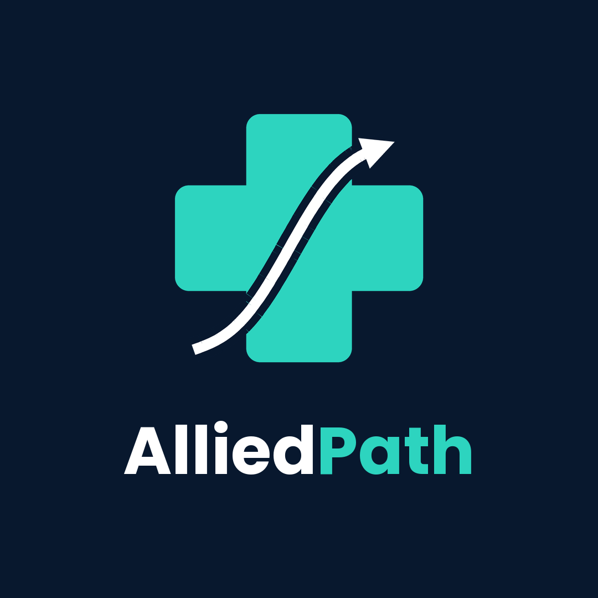

Loading theatre view…
View 1 of 5Entrance
Drag to look around · scroll or pinch to zoom · tap a numbered point
Voice guide speaking

A 360° walkthrough for Anaesthesia & Operation Theatre Technology students.
Turn your sound on · Opens full screen on phones